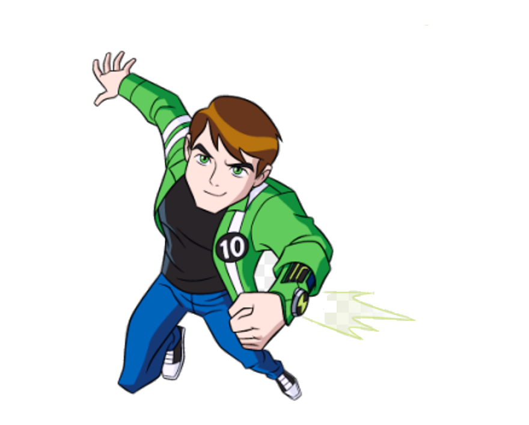

XLR-8
“ It's like a skate, so this can wait. Fast not late, XLR8! ” XLR8 (pronounced "Accelerate") is the Omnitrix's DNA sample of a Kineceleran from the planet Kinet. XLR8 is capable of delivering speed-enhanced attacks (namely, punches) with rapid succession.
HEATBLAST
“ If you can't take the heat, then stay out of the kitchen! ” Heatblast is the Omnitrix's DNA sample of a Pyronite from the planet-like star Pyros. Heatblast can shoot a calorific laser with his two hands.
FOURARMS
“ Four Arms! Each fists with your name on it! ” Four Arms is the Omnitrix's DNA sample of a Tetramand from the planet Khoros. Four Arms is a humanoid alien that is approximately twelve feet tall, has well developed muscles, two pairs of arms with four-fingered hands, and red skin.
DIAMONDHEAD
“ You're in trouble, Vilgax. I've had a lot of practice with this one. ” Diamondhead is the Omnitrix's DNA sample of a Petrosapien from the planet Petropia. Diamondhead's body is composed of durable pale green crystals
UPGRADE
“ How about an upgrade? ” Upgrade is the Omnitrix's DNA sample of a Galvanic Mechamorph from Galvan Prime's moon, Galvan B. Upgrade has a black exterior with green stripes that resemble circuitry all over him. The green circle on his head is his eye, which glows whenever he talks. His body is made up of billions of small cell-like creatures called nanites
LATO_LATO
“ WALL... OF... SOUND!!! ” Echo Echo is the Omnitrix's DNA sample of a Sonorosian from the planet Sonorosia. Because his true form is made of living sound waves, Echo Echo's appearance is actually a small, white containment suit made of silicon, making his body a living amplifier.
CANNONBOLT
“ Time to rock and roll! ” Cannonbolt is the Omnitrix's DNA sample of an Arburian Pelarota from the destroyed planet Arburia. When Cannonbolt turns into a sphere, he rolls up into a ball, with his backplates and the plates on his hands covering him. His sphere form has semi-circular stripes across his body,
DITTO
“ Hah! Good luck... Chasing all of us... At once! ” Ditto is the Omnitrix's DNA sample of a Splixson from the planet Hathor. Ditto is about the height of an average human child.